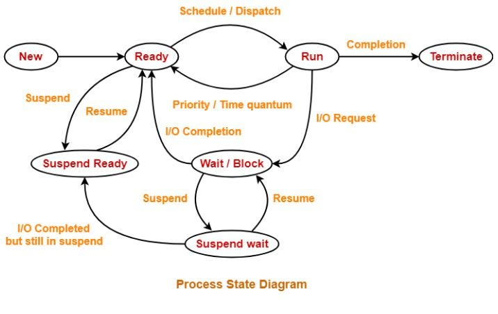
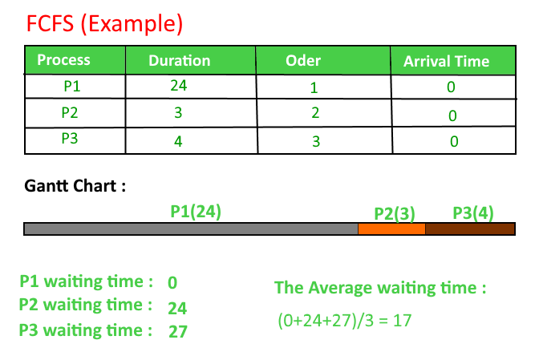
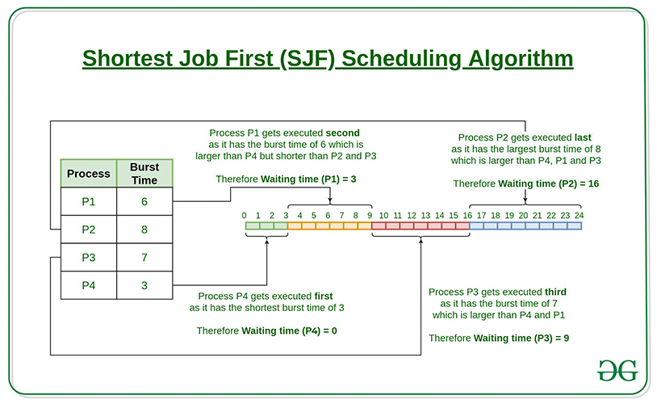
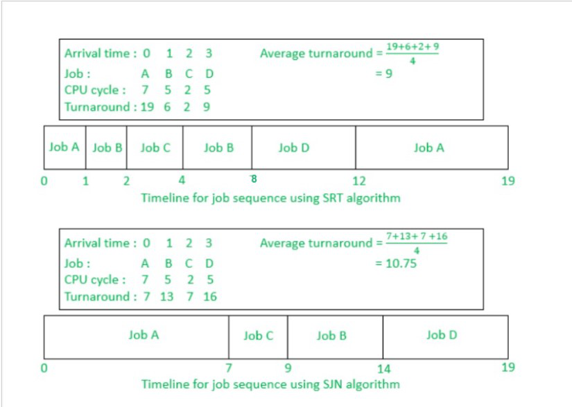
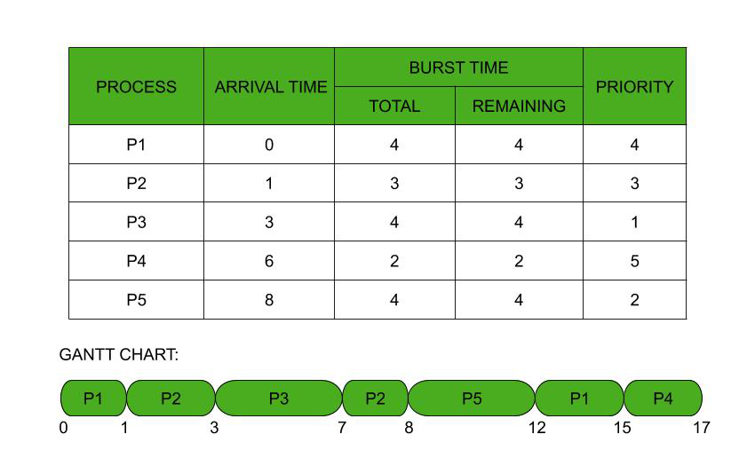
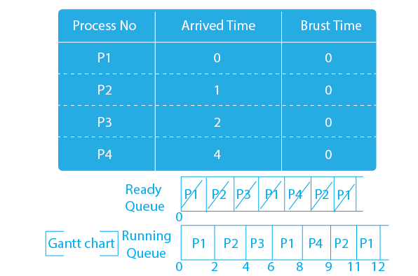
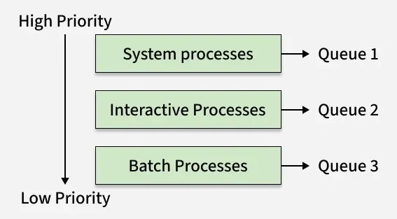
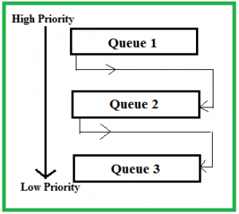

🖥️ CPU Scheduling – Complete Notes (Operating Systems)
1. What is CPU Scheduling?
CPU Scheduling is the process of selecting one process from the ready queue to allocate the CPU so that it can execute.
👉 The goal is to make maximum use of CPU and provide fast response to processes.
2. Why CPU Scheduling is Required?
- 🧠 Multiple processes exist in memory at the same time
- 🧮 Only one process can use the CPU at a time
- ⏳ While one process is waiting for I/O, CPU should not remain idle
- 🆕 New – Process is being created
- ⏱️ Ready – Process is waiting for CPU
- ▶️ Running – Process is executing on CPU
- ⏸️ Waiting (Blocked) – Process waiting for I/O
- ❌ Terminated – Process execution finished

👉 CPU scheduling mainly deals with processes in Ready state.
4. Types of CPU Scheduling
4.1 Preemptive Scheduling
- 🔁 CPU can be taken away from a running process
- ⚡ Better response time
- 👥 Used in time-sharing systems
Examples:
- 🔄 Round Robin
- ⏱️ Shortest Remaining Time First (SRTF)
- ⭐ Priority Scheduling (Preemptive)
4.2 Non-Preemptive Scheduling
- 🔒 Once CPU is allocated, it cannot be taken away
- 🧘 Simpler but slower response
Examples:
- 📥 FCFS
- ✂️ SJF (Non-preemptive)
- ⭐ Priority Scheduling (Non-preemptive)
5. CPU Scheduling Criteria
These are used to evaluate scheduling algorithms:
| Criteria |
Description |
Goal |
| CPU Utilization |
Percentage of time CPU is busy |
Maximize |
| Throughput |
No. of processes completed per unit time |
Maximize |
| Turnaround Time |
Completion time – Arrival time |
Minimize |
| Waiting Time |
Turnaround time – Burst time |
Minimize |
| Response Time |
First response – Arrival time |
Minimize |
6. Important Time Terms Used in CPU Scheduling
Understanding these time terms is mandatory for solving numerical problems in CPU Scheduling.
6.1 Arrival Time (AT)
- ⏰ Time at which a process enters the ready queue.
6.2 Burst Time (BT)
- 💻 Total CPU time required by a process for execution.
6.3 Completion Time (CT)
- ✅ Time at which a process finishes its execution.
6.4 Turnaround Time (TAT)
- 🔄 Total time taken from arrival to completion.
Formula:
TAT = CT − AT
6.5 Waiting Time (WT)
- ⌛ Total time a process spends waiting in the ready queue.
Formula:
WT = TAT − BT
6.6 Response Time (RT)
- 🚀 Time from arrival of process to its first CPU allocation.
Formula:
RT = First CPU start time − AT
6.7 Remaining Burst Time (RBT)
- 🕒 CPU time still required to complete the process.
Formula:
RBT = Original BT − Executed time
6.8 Time Quantum (TQ)
- ⏲️ Fixed time slice given to each process in Round Robin scheduling.
6.9 Context Switch Time (CST)
- 🔀 Time taken to switch CPU from one process to another.
6. CPU Scheduling Algorithms
6.1 First Come First Serve (FCFS)
Type: Non-preemptive
Working:
- 📥 Processes are executed in order of arrival

Advantages:
Disadvantages:
- ❌ Poor average waiting time
- 🚚 Convoy effect
6.2 Shortest Job First (SJF)
Type: Preemptive & Non-preemptive
Working:
- ✂️ Process with smallest CPU burst time is executed first

Advantages:
- 🌟 Minimum average waiting time (theoretically optimal)
Disadvantages:
- ❓ Burst time prediction difficult
- 😴 Starvation of long processes
6.3 Shortest Remaining Time First (SRTF) and Shortest Job Next / Non-preemptive SJF
Type: Preemptive SJF
Working:
- ⏱️ CPU is allocated to process with least remaining burst time
Type: non-preemptive SJF
Working:
- Once a job starts, it runs till completion.

Disadvantage:
6.4 Priority Scheduling
Type: Preemptive & Non-preemptive
Working:
- ⭐ CPU allocated to process with highest priority
- 🔢 Lower priority number means higher priority

Problem:
Solution:
- 🧓 Aging (gradually increases priority of waiting processes)
6.5 Round Robin (RR)
Type: Preemptive
Working:
- 🔁 Each process gets CPU for a fixed time slice (Time Quantum)

Advantages:
- ⚖️ Fair scheduling
- 👥 Good for time-sharing systems
Disadvantages:
- 🔄 Too small quantum → high context switching
- 🐢 Too large quantum → behaves like FCFS
6.6 Multilevel Queue Scheduling
Working:
- 🧱 Ready queue divided into multiple queues
- 🧠 Each queue has its own scheduling algorithm

Example Queues:
- 🛠️ System processes
- 💬 Interactive processes
- 📦 Batch processes
6.7 Multilevel Feedback Queue Scheduling
Working:
- 🔼 Process can move between queues
- 🎯 Priority changes based on behavior

Advantage:
- 🛡️ Prevents starvation
- 💡 Used in modern OS
7. Dispatcher
Dispatcher is the module that:
- 🔄 Switches context
- 🧑💻 Switches to user mode
- 🎯 Jumps to correct instruction
Dispatcher latency: Time taken to stop one process and start another
8. Starvation
Starvation occurs when a process waits indefinitely for CPU due to low priority.
Occurs in:
- ⭐ Priority Scheduling
- ✂️ SJF
Solution: 🧓 Aging
9. Context Switching
Context switching means saving the state of current process and loading the state of next process.
- 🔄 Extra overhead
- ❌ No useful work done during switching
10. Important GATE Points ⭐
- 🚚 FCFS suffers from Convoy Effect
- 🌟 SJF gives minimum average waiting time
- 🔁 Round Robin is best for time-sharing systems
- 🧓 Aging solves starvation
- ⚡ Preemptive scheduling improves response time
11. One-Line Exam Definition
CPU Scheduling is the technique used by the operating system to decide which process in the ready queue should be allocated the CPU next.
12. Summary Table
| Algorithm |
Preemptive |
Starvation |
Used For |
| FCFS |
❌ |
❌ |
Batch systems |
| SJF |
✔ / ❌ |
✔ |
Optimal waiting time |
| Priority |
✔ / ❌ |
✔ |
Priority-based systems |
| Round Robin |
✔ |
❌ |
Time-sharing |
📌 These notes are GATE-ready, interview-ready, and exam-oriented.